COMIDA MENÚ
| 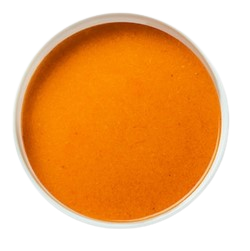 Crema de Jitomate $25
×
La crema de jitomate es una sopa cremosa y suave que se elabora a base de tomates frescos, cebolla, ajo y crema de leche, acompañada de crujientes tortillas de maíz o pan tostado. |
La crema de jitomate es una sopa cremosa y suave que se elabora a base de tomates frescos, cebolla, ajo y crema de leche, acompañada de crujientes tortillas de maíz o pan tostado. | 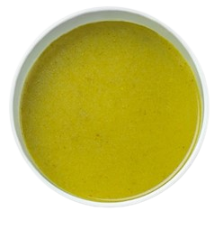 Crema de Cilantro $25
×
La crema de cilantro es una sopa suave y aromática que se prepara con cilantro fresco, cebolla, ajo, crema de leche y otros ingredientes aromáticos, acompañada de crujientes tortillas de maíz o pan tostado. |
La crema de cilantro es una sopa suave y aromática que se prepara con cilantro fresco, cebolla, ajo, crema de leche y otros ingredientes aromáticos, acompañada de crujientes tortillas de maíz o pan tostado. |
| 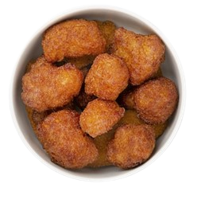 Boneless de Coliflor $49
×
Los boneless de coliflor son una alternativa vegetariana a los boneless de pollo. Se elaboran con floretes de coliflor cortados en trozos pequeños y sazonados con una mezcla de especias y harina para crear una textura similar a la del pollo frito. |
Los boneless de coliflor son una alternativa vegetariana a los boneless de pollo. Se elaboran con floretes de coliflor cortados en trozos pequeños y sazonados con una mezcla de especias y harina para crear una textura similar a la del pollo frito. | 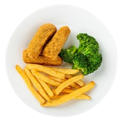 Tiras de Pescado Veganas $89
×
Una alternativa vegetariana y sin pescado a las clásicas tiras de pescado frito. Se elaboran con una mezcla de proteína vegetal, como proteína de soja, gluten de trigo o garbanzos, y se sazonan con una variedad de especias y hierbas para imitar el sabor y la textura del pescado. |
Una alternativa vegetariana y sin pescado a las clásicas tiras de pescado frito. Se elaboran con una mezcla de proteína vegetal, como proteína de soja, gluten de trigo o garbanzos, y se sazonan con una variedad de especias y hierbas para imitar el sabor y la textura del pescado. |
| 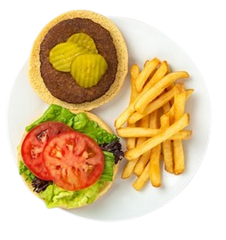 Hamburguesa sencilla $99
×
La carne se forma en una forma redonda plana y se cocina a la parrilla, a la plancha o a la barbacoa. Luego se coloca entre dos panes de hamburguesa y se puede agregar una variedad de ingredientes y aderezos, como lechuga, tomate, cebolla, queso, tocino, pepinillos, salsa de tomate, mostaza, mayonesa, kétchup, entre otros. |
La carne se forma en una forma redonda plana y se cocina a la parrilla, a la plancha o a la barbacoa. Luego se coloca entre dos panes de hamburguesa y se puede agregar una variedad de ingredientes y aderezos, como lechuga, tomate, cebolla, queso, tocino, pepinillos, salsa de tomate, mostaza, mayonesa, kétchup, entre otros. | 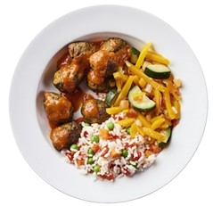 Albóndigas Vegetarianas $59
×
Alternativa vegetariana a las albóndigas tradicionales. Estas se preparan con una mezcla de proteína vegetal, como soja texturizada, lentejas, garbanzos o quinoa, que se mezcla con pan rallado, huevo (o sustituto de huevo) y una variedad de especias y hierbas para crear una textura y sabor similar a las albóndigas de carne. |
Alternativa vegetariana a las albóndigas tradicionales. Estas se preparan con una mezcla de proteína vegetal, como soja texturizada, lentejas, garbanzos o quinoa, que se mezcla con pan rallado, huevo (o sustituto de huevo) y una variedad de especias y hierbas para crear una textura y sabor similar a las albóndigas de carne. |
| 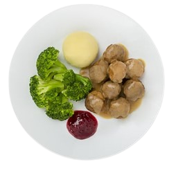 Albóndigas Suecas de Pollo $129
×
Una variante de las clásicas albóndigas suecas, que se elaboran tradicionalmente con carne de vacuno y cerdo. En lugar de utilizar carne de res y cerdo, las albóndigas suecas de pollo están hechas con una mezcla de carne de pollo picada, pan rallado, huevo, cebolla y una variedad de especias y hierbas, como pimienta, nuez moscada y enebro. |
Una variante de las clásicas albóndigas suecas, que se elaboran tradicionalmente con carne de vacuno y cerdo. En lugar de utilizar carne de res y cerdo, las albóndigas suecas de pollo están hechas con una mezcla de carne de pollo picada, pan rallado, huevo, cebolla y una variedad de especias y hierbas, como pimienta, nuez moscada y enebro. | 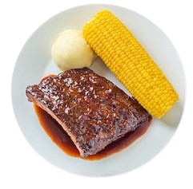 Costillas BBQ $199
×
Plato clásico de la cocina estadounidense que consiste en costillas de cerdo cocinadas lentamente en una salsa dulce y picante de barbacoa. Las costillas se cuecen a fuego lento en una parrilla o en el horno, lo que las hace extremadamente tiernas y jugosas. |
Plato clásico de la cocina estadounidense que consiste en costillas de cerdo cocinadas lentamente en una salsa dulce y picante de barbacoa. Las costillas se cuecen a fuego lento en una parrilla o en el horno, lo que las hace extremadamente tiernas y jugosas. |
| 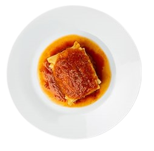 Lasaña de Carne $69
×
Pasta horneada que consiste en capas de láminas de pasta intercaladas con una salsa de carne y queso. La salsa de carne se prepara con carne molida de res, cebolla, ajo, tomate triturado, hierbas y especias. La pasta se cuece y se intercala con la salsa de carne y queso rallado, generalmente mozzarella y parmesano. |
Pasta horneada que consiste en capas de láminas de pasta intercaladas con una salsa de carne y queso. La salsa de carne se prepara con carne molida de res, cebolla, ajo, tomate triturado, hierbas y especias. La pasta se cuece y se intercala con la salsa de carne y queso rallado, generalmente mozzarella y parmesano. | 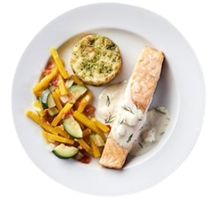 Salmón $179
×
El salmón fresco se caracteriza por su carne de color rosa oscuro y textura firme. Para preparar el salmón, generalmente se corta en filetes o en porciones individuales y se sazona con una variedad de hierbas y especias, como el eneldo, el limón, la sal y la pimienta. |
El salmón fresco se caracteriza por su carne de color rosa oscuro y textura firme. Para preparar el salmón, generalmente se corta en filetes o en porciones individuales y se sazona con una variedad de hierbas y especias, como el eneldo, el limón, la sal y la pimienta. |
| 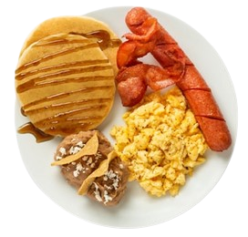 Desayuno Completo $69
×
El desayuno es la primera comida del día y se considera la comida más importante ya que brinda la energía necesaria para comenzar el día. El desayuno puede variar, pero generalmente consiste en una combinación de alimentos como cereales, frutas, pan, huevos, lácteos y bebidas como café, té o jugo. |
El desayuno es la primera comida del día y se considera la comida más importante ya que brinda la energía necesaria para comenzar el día. El desayuno puede variar, pero generalmente consiste en una combinación de alimentos como cereales, frutas, pan, huevos, lácteos y bebidas como café, té o jugo. | 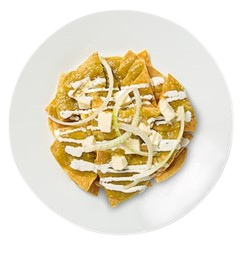 Chilaquiles $45
×
Los chilaquiles son un platillo típico de la cocina mexicana que se consume principalmente en el desayuno. Consiste en trozos de tortilla de maíz frita que se cocinan con una salsa picante y se sirven con queso, crema, cebolla y cilantro. Los chilaquiles pueden ser de diferentes tipos, dependiendo de la salsa utilizada. |
Los chilaquiles son un platillo típico de la cocina mexicana que se consume principalmente en el desayuno. Consiste en trozos de tortilla de maíz frita que se cocinan con una salsa picante y se sirven con queso, crema, cebolla y cilantro. Los chilaquiles pueden ser de diferentes tipos, dependiendo de la salsa utilizada. |